Rescate
Unidad de rescate Renault Camiva B-110 de 1994, conocida en la Quinta como «Lustrín».
- Marca
- Renault Camiva
- Modelo
- B-110
- Año
- 1994
Lustrín
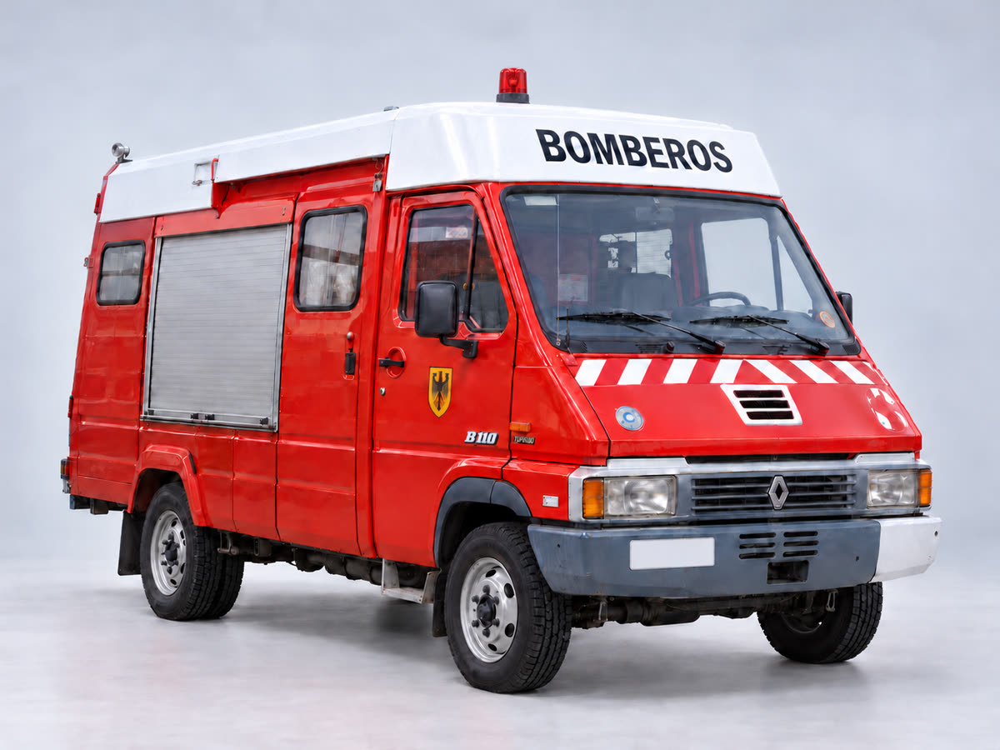
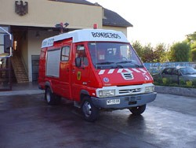
Otras unidades
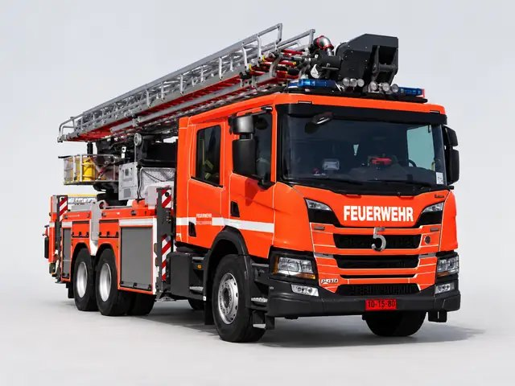
MX-5Plataforma aéreaPlataforma aérea diseñada para operaciones de rescate de difícil acceso y para el control de incendios en edificios.- Marca
- Scania
- Modelo
- P410
- Año
- 2025
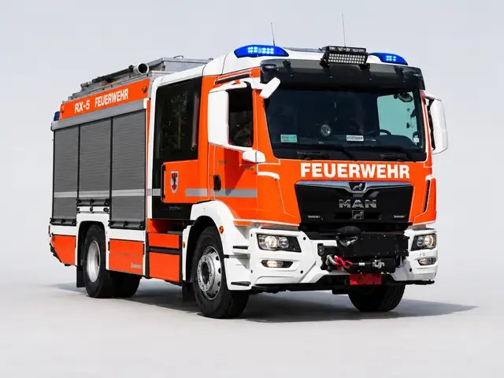
RX-5Rescate pesadoUnidad destinada a intervenciones de rescate técnico pesado y también al control de incendios.- Marca
- MAN-Magirus
- Modelo
- TGM 18.320
- Año
- 2024
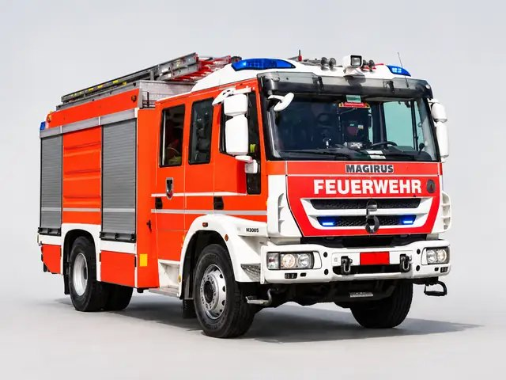
B-5IncendioUnidad destinada principalmente al control de incendios, en servicio desde mayo de 2018.- Marca
- Iveco Magirus
- Modelo
- FF160E30
- Año
- 2017
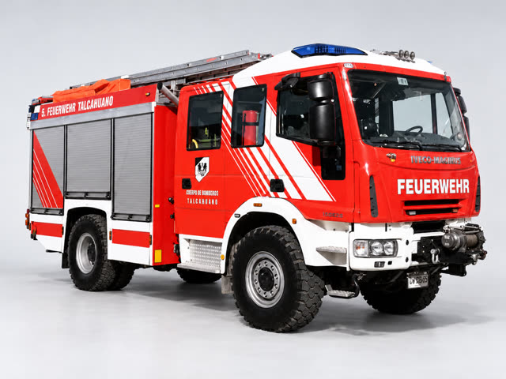
BX-5Incendio y rescateUnidad mixta de incendio y rescate, con gran capacidad de prestaciones y de almacenamiento de equipos.- Marca
- Iveco Magirus
- Modelo
- FF150E30W
- Año
- 2012
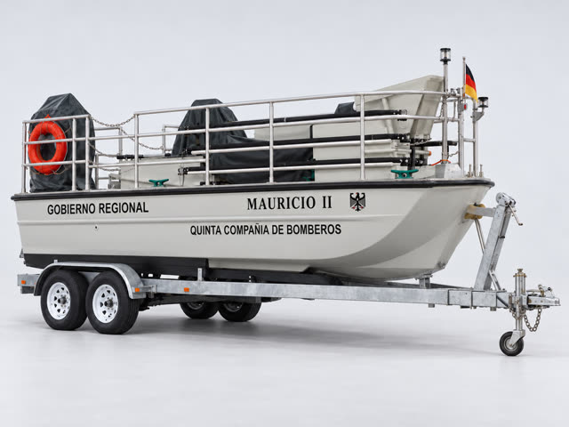
Harbor 28Rescate medioambientalEmbarcación de descontaminación de aguas construida en Iquique y entregada a la Quinta por el Gobierno Regional del Biobío.- Marca
- Astilleros Marco
- Modelo
- Harbor 28
- Año
- 2001
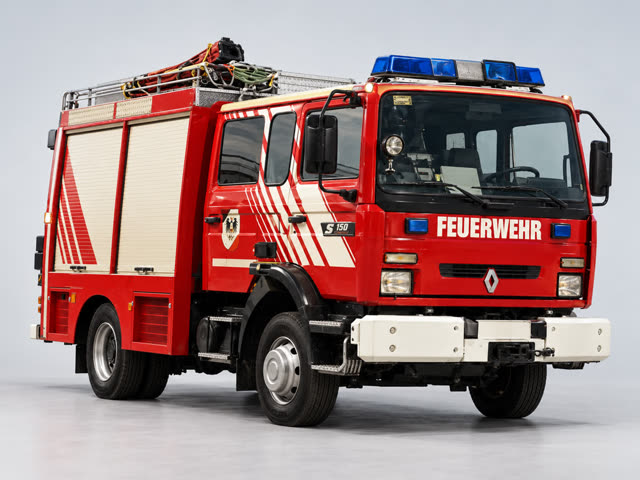
S-150Carro mixto de agua y rescate, también conocido en la Quinta como «Micromachine».- Marca
- Renault Camiva
- Modelo
- S-150
- Año
- 1999
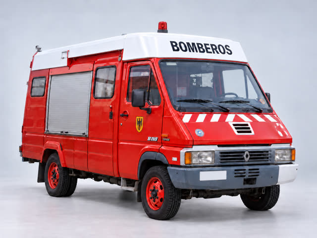
B-110RescateUnidad de rescate Renault Camiva B-110 de 1994, conocida en la Quinta como «Lustrín».- Marca
- Renault Camiva
- Modelo
- B-110
- Año
- 1994
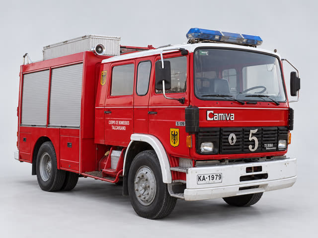
S-170Unidad Renault Camiva S-170 de 1990, conocida en la Quinta como «Panzer».- Marca
- Renault Camiva
- Modelo
- S-170
- Año
- 1990
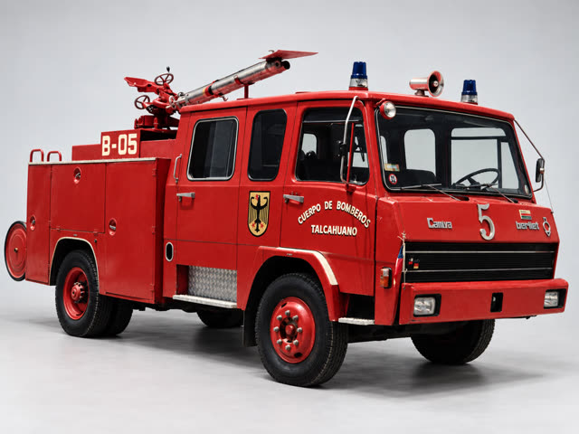
Berliet-CamivaUnidad Berliet-Camiva de 1973, conocida en la Quinta como «Lili Marlen».- Marca
- Berliet-Camiva
- Año
- 1973
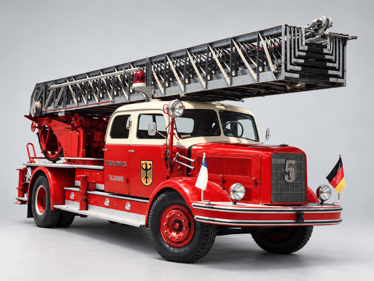
Magirus DeutzEscalera mecánicaUnidad Magirus Deutz de 1954 con escalera mecánica.- Marca
- Magirus Deutz
- Año
- 1954
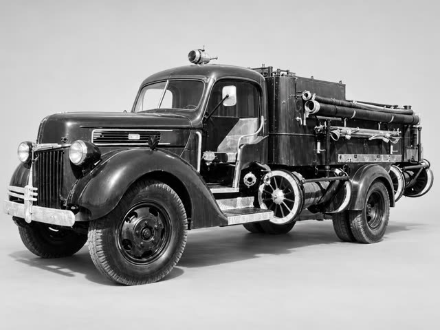
FordAutobombaAutobomba Ford de 1941, equipada con bomba Champion.- Marca
- Ford
- Año
- 1941
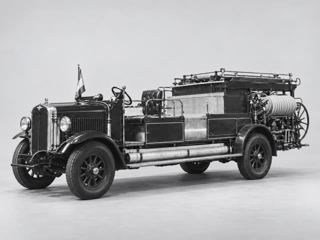
Hansa LloydAutobombaAutobomba Hansa Lloyd de 1927, equipada con bomba Flanders.- Marca
- Hansa Lloyd
- Año
- 1927
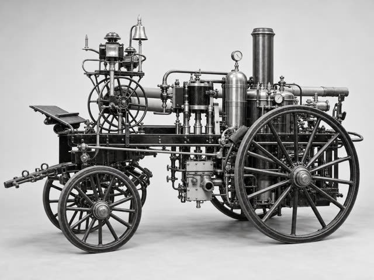
Usines BeduwéBomba a vaporBomba a vapor fabricada por Usines Beduwé, bautizada «Bomba Chile» y en servicio desde 1911.- Marca
- Usines Beduwé
- Año
- 1911
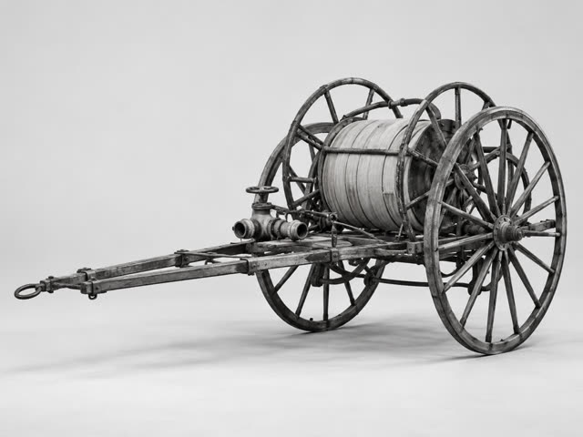
GalloCarrete porta manguerasCarrete porta mangueras, conocido en bomberos como gallo, de 1908: el año de fundación de la Quinta.- Año
- 1908